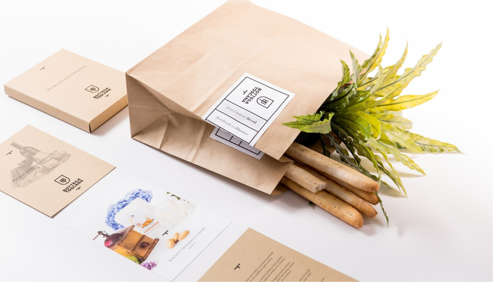

Экологичная упаковка

Главное:
Способ №1
Съедобная упаковка
Способ №2
Многоразовая упаковка
Способ №3
Отсутствие упаковки
Важно!
*Неправильно утилизированная пластиковая упаковка может привести к серьезному загрязнению окружающей среды.
Проблема окружающей среды стала одной из главных проблем нашего времени.
Мы подготовили для вас несколько лайфхаков, которые помогут вам экологично пользоваться упаковкой.
Cъедобная упаковка
Вместо пластиковых контейнеров можно использовать контейнеры из теста или других съедобных материалов. Такой подход поможет уменьшить количество пластиковых отходов и может быть более экологически безопасным.
Многоразовая упаковка
Вместо одноразовых пластиковых упаковок можно использовать многоразовые, такие как стеклянные банки или металлические контейнеры. Это поможет сократить количество пластиковых отходов и сэкономить деньги на упаковке.
Правильное использование продуктов
Используйте все части продуктов, чтобы уменьшить количество отходов. Например, остатки овощей и фруктов можно использовать для приготовления супов или пюре.
Покупка продуктов без упаковки
Во многих магазинах появилась возможность купить продукты без упаковки. Это позволяет покупать только необходимое количество продуктов и не создавать лишний мусор.
Изготовление собственных продуктов
Если у вас есть время, вы можете сделать свои продукты самостоятельно, такие как йогурт, сыр или хлеб. Это позволяет контролировать количество упаковки, необходимой для хранения продуктов, а также может быть экономически выгодным.